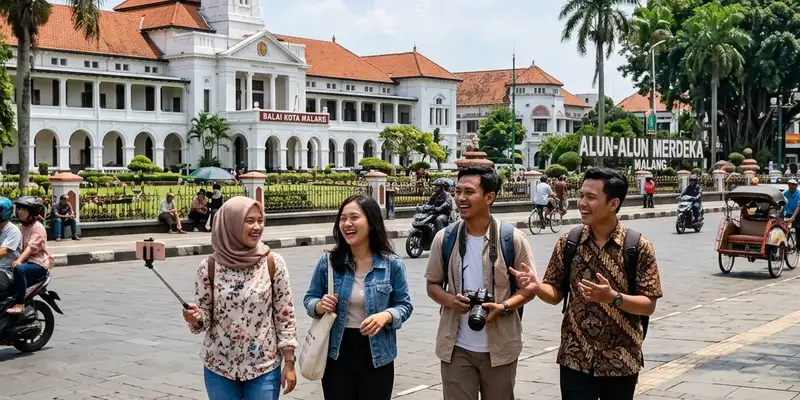

Itinerary sehari wisata Malang kota dapat disusun dengan memulai kunjungan dari Kayutangan pada pagi hari, dilanjutkan ke kawasan pusat kota lain, dan diakhiri dengan menikmati suasana malam di kawasan heritage tersebut.
Ringkasan Inti
- Itinerary sehari sebaiknya disusun berdasarkan kedekatan lokasi agar waktu perjalanan lebih efisien.
- Kayutangan dapat menjadi titik awal maupun titik akhir perjalanan tergantung preferensi suasana yang diinginkan.
- Pusat Kota Malang memiliki beberapa titik wisata yang berdekatan dengan kawasan Kayutangan.
- Kuliner khas Malang dapat menjadi bagian dari itinerary di sela-sela kunjungan ke lokasi wisata.
- Menyesuaikan waktu kunjungan dengan jam ramai membantu perjalanan terasa lebih nyaman.
Bagaimana Menyusun Itinerary Sehari Wisata Malang Kota?
Itinerary sehari wisata Malang kota dapat disusun dengan mempertimbangkan kedekatan lokasi antar destinasi, waktu operasional tempat wisata, serta preferensi suasana yang ingin dinikmati wisatawan.
Langkah dasar menyusun itinerary yang efisien:
- Tentukan titik awal perjalanan berdasarkan lokasi penginapan atau titik kedatangan di Malang kota.
- Kelompokkan destinasi berdasarkan kedekatan jarak agar waktu perjalanan antar lokasi tidak terbuang percuma.
- Sisipkan waktu istirahat dan kuliner di antara jadwal kunjungan agar perjalanan tidak terasa terburu-buru.
- Sesuaikan waktu kunjungan ke Kayutangan dengan preferensi suasana, baik pagi yang tenang maupun malam yang lebih semarak.
Urutan Kunjungan Apa yang Efisien di Pusat Kota Malang?
Urutan kunjungan yang efisien di pusat kota Malang umumnya dimulai dari kawasan yang berdekatan dengan Kayutangan, seperti alun-alun dan balai kota, sebelum melanjutkan ke titik wisata lain di sekitarnya.
Kayutangan berlokasi tidak jauh dari alun-alun dan balai kota Malang, sehingga wisatawan dapat menyusun rute yang saling berdekatan tanpa perlu menempuh perjalanan jauh antar lokasi. Pendekatan ini membantu menghemat waktu sekaligus memaksimalkan jumlah destinasi yang dapat dikunjungi dalam sehari.

Eksplorasi pusat kota Malang mencakup kawasan Alun-Alun Tugu dan bangunan bersejarah yang mudah dijangkau dengan berjalan kaki.
Contoh Susunan Itinerary Sehari di Malang Kota
Contoh susunan itinerary sehari di Malang kota dapat dimulai pada pagi hari dengan mengunjungi Kayutangan, dilanjutkan menjelajahi kawasan pusat kota, dan diakhiri dengan menikmati kuliner malam di sekitar area tersebut.
Susunan yang dapat dijadikan referensi:
- Pagi hari: Mengunjungi Kayutangan Heritage untuk menikmati suasana tenang dan berfoto di rumah-rumah tua sebelum kawasan ramai pengunjung.
- Siang hari: Menjelajahi kawasan sekitar pusat kota, termasuk alun-alun dan bangunan bersejarah lain di dekat Kayutangan.
- Sore hari: Beristirahat sejenak sambil mencicipi kuliner khas Malang di sekitar kawasan pusat kota.
- Malam hari: Kembali ke Kayutangan untuk menikmati suasana lampu temaram yang menjadi ciri khas kawasan pada malam hari.
Apa yang Perlu Dipersiapkan Sebelum Menjelajahi Malang Kota dalam Sehari?
Persiapan yang perlu dilakukan sebelum menjelajahi Malang kota dalam sehari meliputi pengecekan jam operasional lokasi wisata, alas kaki yang nyaman, serta perencanaan transportasi antar titik kunjungan. Beberapa persiapan yang disarankan:
- Gunakan alas kaki yang nyaman karena sebagian rute di kawasan Kayutangan berupa gang sempit dan berjalan kaki.
- Siapkan transportasi yang fleksibel, baik kendaraan pribadi maupun transportasi umum, untuk berpindah antar lokasi.
- Cek jam operasional destinasi tambahan yang ingin dikunjungi agar tidak melewatkan waktu kunjungan.
- Bawa air minum secukupnya, terutama jika itinerary mencakup banyak titik yang ditempuh dengan berjalan kaki.
Apa Kesalahan Umum saat Menyusun Itinerary Wisata Malang Kota?
Kesalahan umum saat menyusun itinerary wisata Malang kota terjadi ketika wisatawan memasukkan terlalu banyak destinasi tanpa mempertimbangkan jarak dan waktu tempuh antar lokasi. Beberapa kesalahan lain yang perlu dihindari:
- Tidak menyisakan waktu istirahat di antara jadwal kunjungan yang padat.
- Mengabaikan kondisi cuaca yang dapat memengaruhi kenyamanan berjalan kaki di kawasan heritage.
- Tidak memperhitungkan waktu tambahan apabila berencana melanjutkan perjalanan ke luar kota seperti Batu.
Kesimpulan
Itinerary sehari wisata Malang kota dapat disusun secara efisien dengan memanfaatkan kedekatan lokasi antara Kayutangan dan kawasan pusat kota lainnya. Perencanaan yang matang membantu wisatawan menikmati suasana heritage tanpa terburu-buru sekaligus membuka peluang untuk melanjutkan perjalanan ke destinasi lain. Untuk memahami cara menggabungkan perjalanan ini dengan trip ke Batu, silakan simak pembahasan mengenai wisata Malang kota yang bisa dipadukan dengan Batu serta spot foto dan daya tarik Kayutangan Heritage Malang.
FAQ Seputar Itinerary Sehari Wisata Malang Kota
Waktu yang dibutuhkan untuk menjelajahi Kayutangan Malang dapat bervariasi, namun umumnya berkisar antara satu hingga dua jam tergantung minat wisatawan terhadap detail sejarah dan spot foto di kawasan tersebut.
Itinerary sehari di Malang kota tetap dapat dilakukan dengan transportasi umum, meskipun kendaraan pribadi umumnya memberikan fleksibilitas waktu yang lebih besar antar lokasi.
Perlengkapan yang perlu dibawa meliputi alas kaki yang nyaman, air minum, dan pakaian yang sesuai dengan aktivitas berjalan kaki di kawasan heritage.